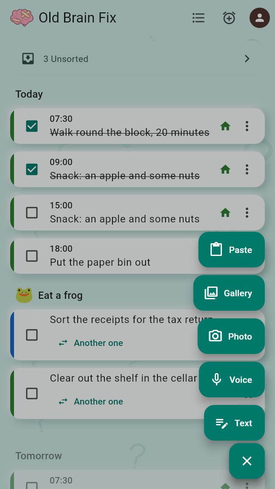
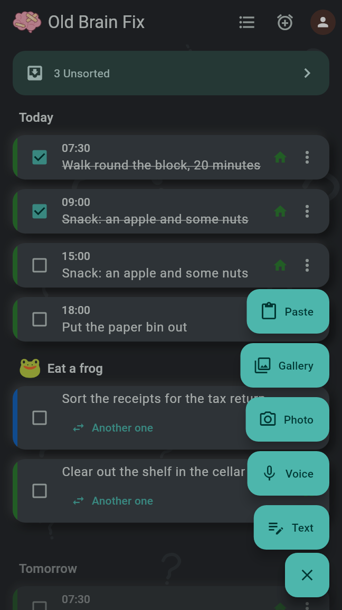
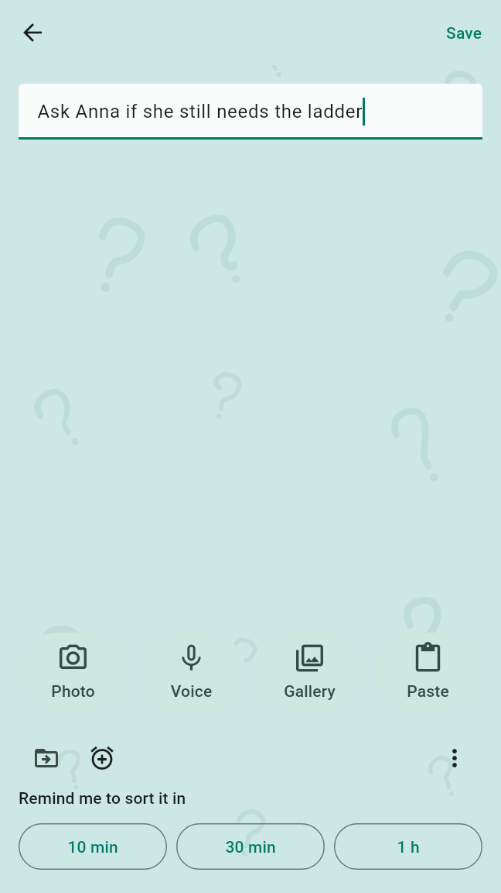
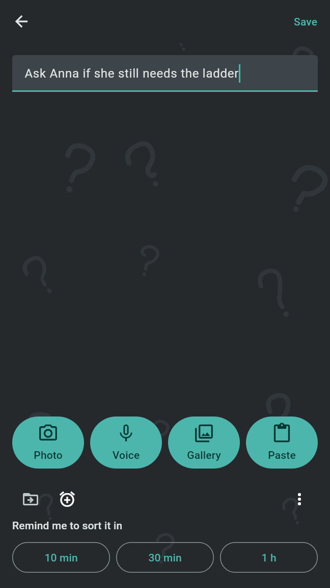
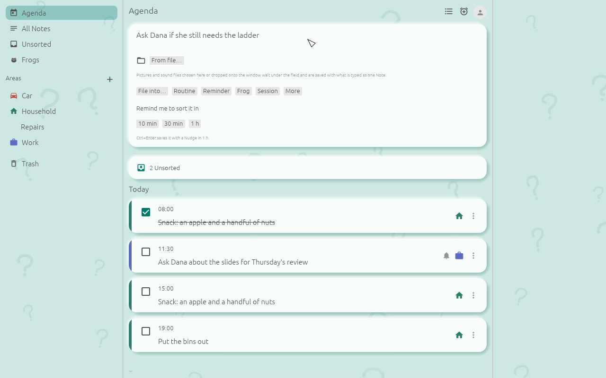
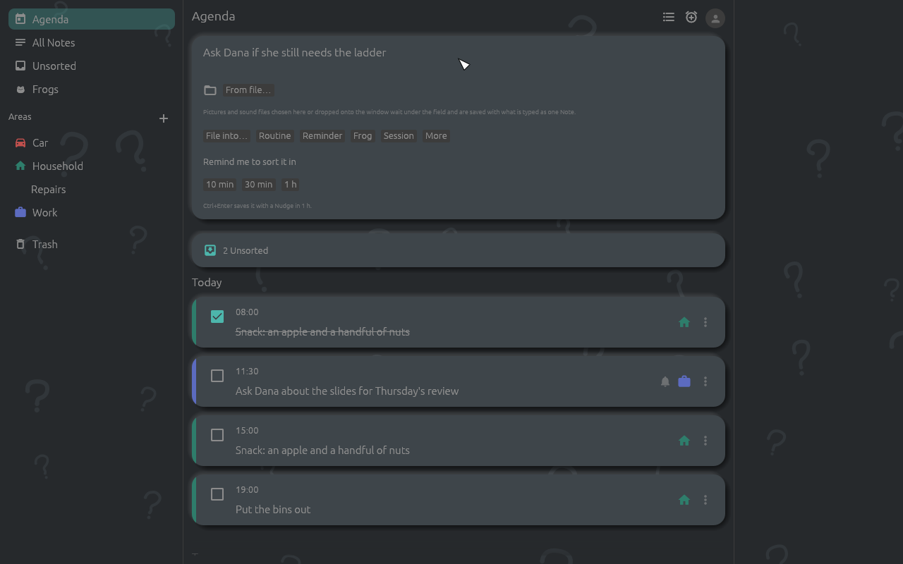

Capturing a Note takes one tap and never asks anything, not even for the App Lock. Sorting can happen on the capture screen or later; until a Note is sorted it is Unsorted, and the Nudge reminds you of it.
The Agenda's "+" fans out the ways to capture, upward from the button, each an icon with its word:
Voice, Photo, Gallery and Paste show only where the Device has them. While the fan is open, "+" reads as Close; tapping it again, tapping outside or Back closes the fan.


The capture screen holds the text field ("What's on your mind?"), the buttons Photo, Voice, Gallery and Paste, the Note card's action row, and at the bottom "Remind me to sort it in" with 10 min, 30 min and 1 h.
Save in the top bar, Back and the app going to the background save as well; the Nudge is then 1 h. An empty Note is not saved. After saving, the new Note's card shows on top of the Agenda with the same options, for what was not done while capturing, merging into another Note among them.


Above the Nudge buttons sits the Note card's action row. All of it is optional:
Each choice comes back to the capture screen and shows at the top, such as "→ Household", most of them with a button that drops it again. Nothing of it is saved before the Note. Once the Note has an Area or Topic, or a Routine, Reminder, Frog, Session or Tally, it needs no Nudge: the three buttons become one Save.
Behind the App Lock the row offers neither File into… nor the Session, which would show the Areas and the Tallies. In a Shared Area where you are a Member, only a Manager sets up Routines, Reminders and Frogs, so the alarm clock is not offered there.
This makes each line of the capture a Line of the Shopping List you pick, and keeps no Note. While a list is picked, the other choices wait unshown. It is offered only while there is a list to add to and the capture holds no photo; a photo taken or pasted afterwards drops it, and it is not offered behind the App Lock. A recording gives the lines of its Transcript, so with a recording it is offered only where the speech model is in place. Until the Transcript is there the Note waits Unsorted, then goes into the list; without a Transcript it stays a Note, and a line at the top says so.
The quick entry points open their capture screen directly, without the fan and without a screen in between: Text with the keyboard up, Voice recording, Photo with the camera open.
While the App Lock is on, its lock screen has its own "+" with the same fan, and every quick entry point opens Capture without unlocking.
While Notes are Unsorted, the Agenda shows "x Unsorted" on top, which opens them. The Nudge is one notification for all of them, such as "3 Notes are Unsorted", first at the earliest time picked while capturing. It offers 10 min, 30 min and 1 h to snooze; tapping it opens "Waiting to be sorted" with the three oldest Unsorted Notes and "+x" for all of them.
An ignored Nudge comes again until no Note is left Unsorted, after the time set in Settings under "Nudge again after" (1 h unless changed). In the Quiet Hours, 22:00 to 08:00 unless changed, Nudges wait until they end; Routines and Reminders still ring on time.
The capture field sits on top of the Agenda and of every list of Notes except the Trash ("What's on your mind?"). Enter starts a new line; Ctrl+Enter (Cmd+Enter on macOS) saves the Note with a Nudge in 1 h. Once something is typed or recorded, the action row and "Remind me to sort it in" with 10 min, 30 min and 1 h appear.
Text still typed, and pictures and files still waiting, when the window closes are kept as a Note with a Nudge in 1 h.


The hotkey, Ctrl+Alt+N unless changed, opens the popup "Capture a Note" over all other windows. It works while Old Brain Fix runs; on Linux with a tray the app keeps running there after its window is closed. The popup holds a one-line field, Record voice, Paste, the same action row and the Nudge buttons. Enter saves the Note with a Nudge in 1 h; Esc and the close button keep what is typed the same way, and an empty popup just closes.
The key is set in Settings under "Quick capture", in the field "Hotkey"; it needs Ctrl, Alt or Super. On X11, Windows and macOS the app takes the key itself. On Wayland the desktop manages it: it asks once and lets you change the key in its own keyboard settings. Where the key is taken or no hotkey is possible, the line under the field says so. On Linux the tray's menu also has Capture a Note.
oldbrainfix capture opens the popup.oldbrainfix capture buy milk keeps "buy milk" at once as an Unsorted Note with a Nudge in 1 h, without a window.oldbrainfix capture - keeps what comes in on standard input.Launchers, key-binding tools and macro pads can run these commands, also where the desktop offers no hotkey.
The Nudge shows as a notification, such as "3 Notes are Unsorted", "Click to sort them.". On Linux and Windows it has the buttons 10 min, 30 min and 1 h to snooze, and "Open Old Brain Fix"; on macOS it shows without buttons. Clicking it opens the window on Unsorted. The switch "Notifications on this computer" in Settings turns notifications off.